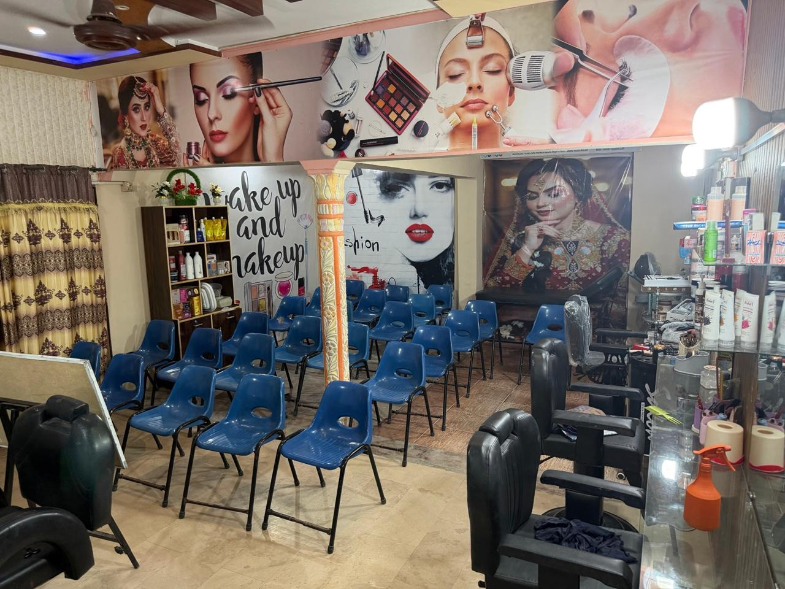

Technology
Computer & Digital Skills
Digital marketing, AI, design, e-commerce and freelancing.
Welcome to ROHI Vocational & Technical Training Institute, Multan. Explore practical learning in digital technology, AI, e-commerce, beauty and languages in a supportive training environment.
 ISLAMIC REPUBLIC OF PAKISTAN
ISLAMIC REPUBLIC OF PAKISTAN
ROHI VTTI is a skills-focused institute in Multan and a NAVTTC Training Partner Institute. We aim to help learners develop practical, relevant abilities through digital and computer skills, beauty and personal care, and language learning.
Discover ROHI VTTI →Explore our main training areas and find a course that matches your interests.
Digital marketing, AI, design, e-commerce and freelancing.

Beauty therapy, hair styling and skin care training.

Build confidence through English and German language learning.
Practical learning, supportive teaching and relevant skill areas.
Build understanding through hands-on learning and useful activities.
Explore digital, creative, beauty and language learning pathways.
Develop skills relevant to further learning and career exploration.